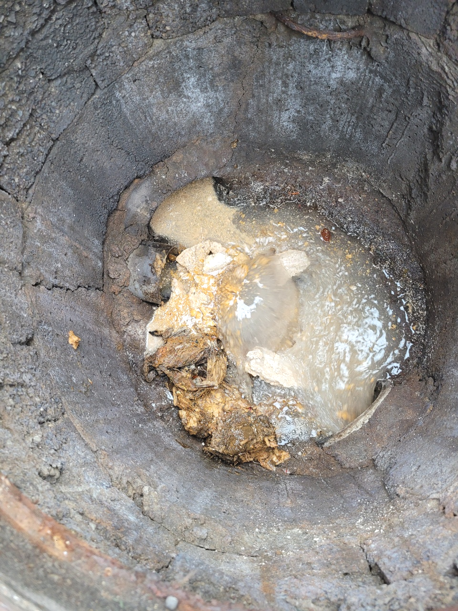
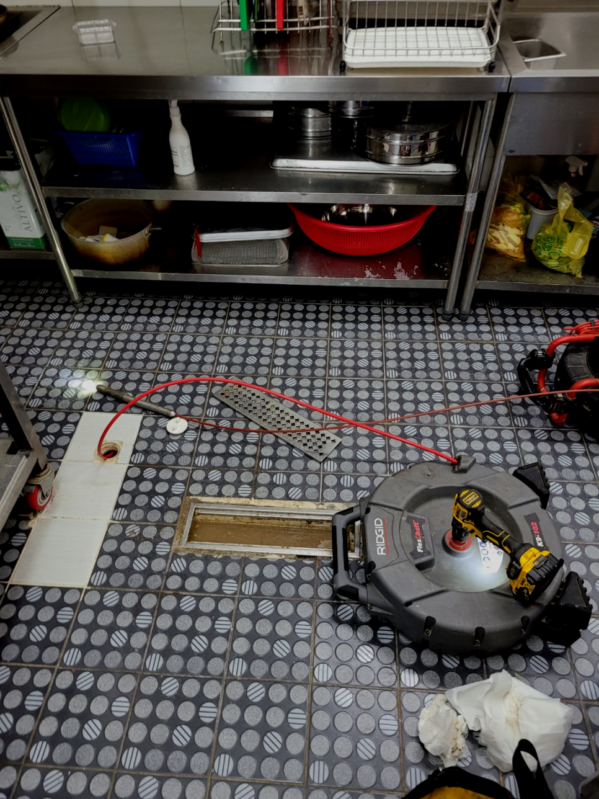
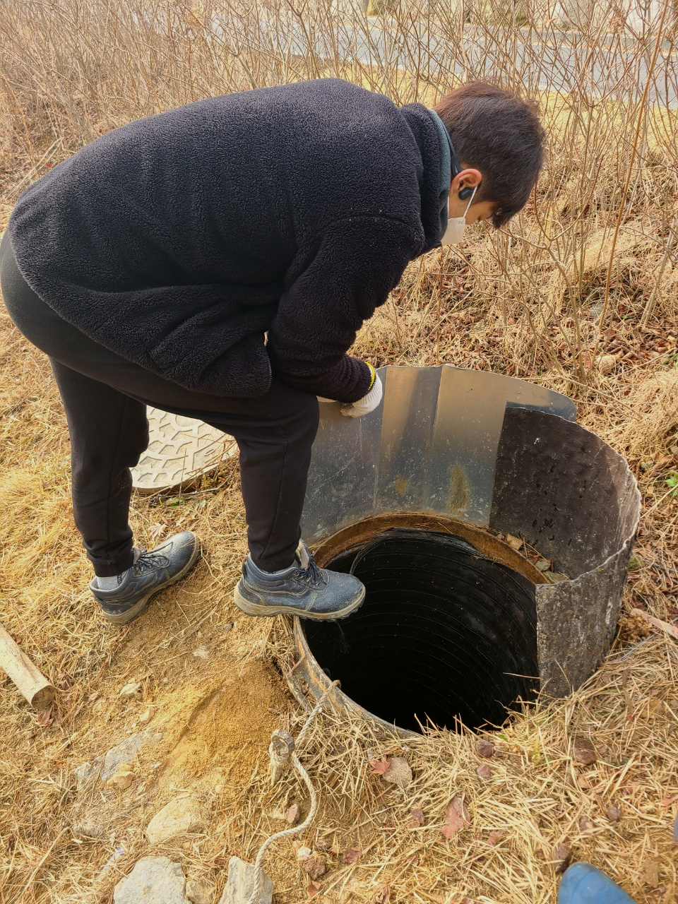
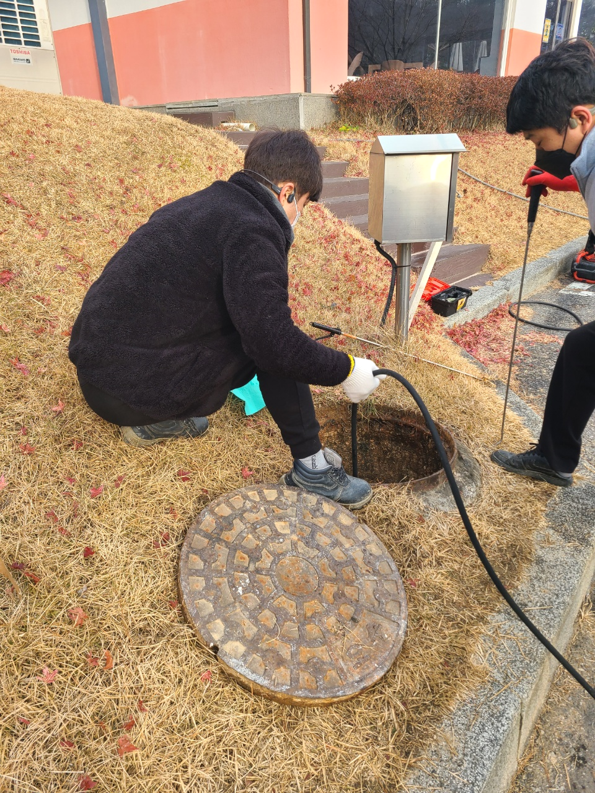
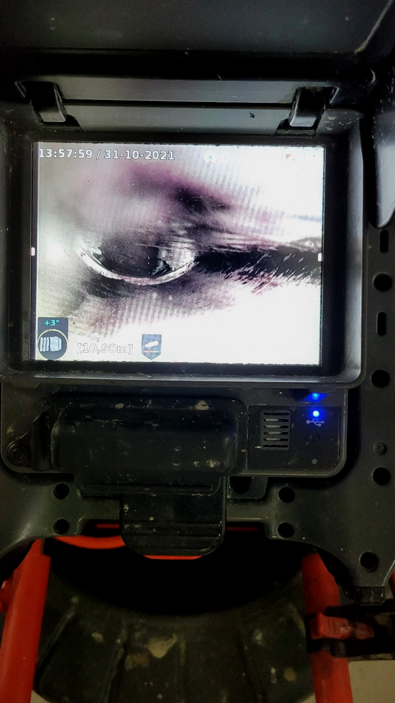
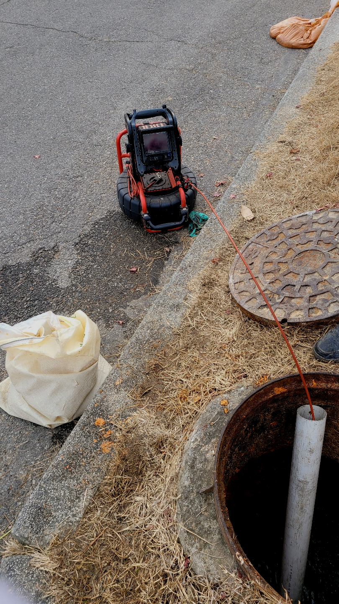

🏠 오산 궐동 하수구막힘역류뚫음 세마동 하수구뚫는업체
오산 세마동 변기막힘 전문 시공 후기

📋 작업 개요
- 위치: 오산 세마동, 세마동, 오산
- 서비스 유형: 변기막힘, 하수구막힘, 배관막힘, 누수수리, 역류해결, 뚫는업체, 배관보수
- 작업 일시: 2023. 9. 13. 19:55
- 업체명: 하수구수사대 (010-5615-2118)
🔍 문제 상황
평상시처럼 주방에서 설거지를 하고 있는데 배출구 물이 시원하게 빠지지 않는것 같은 느낌은 기분탓인가 하고 생각했던 분들 계시죠
배수구 배관막힘은 많은 고객분들이 해결하는 과정을 물어보시느 상황이 많습니다만, 유지관리 방법에 대하여는 그다지 관심을 갖지 않으십니다.
오산 궐동 하수구막힘역류뚫음 세마동 하수구뚫는업체
가정집은 물론 상가처럼 큰 건물이나 업체 건물처럼 배수구자체가 큼지막한 곳도 자주 나가서 작업을 합니다. 가정집도 예외 없으면 준비성은 기본이고 금액에 관련해서 우려되시는 분들을위해 기본적으로 유선안내해 드리고 있습니다.
얼마 전 다녀왔던 현장은 혼자서 배출구뚫어보시려다가 한참을 노력해도 해결이 되지 않아 전문 업체를 찾게 되셨다고 하는데요. 방문 드렸던 현장은 자주 막힘 증상이 보였던 곳이고 뚫은지 얼마 안 된 상태에서 또다시 문제가 발생해 확실한 해결을 원하셨습니다.

🔎 원인 분석
💡 전문가 진단: 오산 궐동 하수구막힘역류뚫음 세마동 하수구뚫는업체
하수막힘은 얼마나 비용이 들어갈지 모르기 때문에 고민되는 것은 당연합니다만, 시간이 흐를수록 들어가는 비용도 늘어나기 때문에 증상이 발견됐을 때 당장 고칠 생각이 없더라도 얼마나 심각한 것인지 견적 정도는 받아보시고 고려해 보시는 것이 좋습니다.
일상에 차지 중인 비중이 매우 많기 때문에 고장이 날 시 재빨리 대처하시는 것이 지혜로운 것이에요.배수구뚫어보시다가 아무 반응을 보이지 않아서 결국 설비회사들을 찾으시는 분들이 상상하는 것보다도 흔하답니다.
보통배출구가 막히게 되면 초반에는 물이 배수되는 속도가 느려지다가 시간이 흐를수록 그 불편함은 더욱 커지기 마련이라서 신속하게 해결하시는 것이 좋습니다
배수관으로 배수가 안되거나 느리게 넘치고 있다면 이러한 것들을 고쳐드리는 경력자를 찾아내서 실력자를 이용하셔야 합니다.배출구막힘 무수히도 많은 업체들이 있는데 업차마다 다른 점이 있어서 신중을 기해야 합니다.
기름이 우리가 생각할때는 액체상태지만 요리를 하고 난 후에는 식재료의성분이 섞인 기름이 됩니다. 조리를 한 뒤에느 기름이 굳으면 하얗게 변하게 된답니다. 이러한 기름은 배출구배관 속에서 굳으면 벽에 붙어 단단하게 고정이 됩니다.

🔧 작업 과정
배출구막힌배관을 뚫을려할때 사용되는최첨단장비로는 빨아드리거나 샤프트를 이용하고 막힌곳에따라 적절한기계를 쓰고있답니다. 무슨상태이든지 그에맞는전문장비들이 갖춰져있어서 우려하시지 않아도되는데요.
하수 일반적으로는 어찌해결해보려고합니다 급해지셔서 서둘러서뚫으실텐데요. 대한민국에서는 막혀버린배수관을 뚫어버리기위한 약품등등들을 살수가있어요.
배수관들은 시간상관없이항상 물샘증상이나타나기에 쉬는날에도 방문하고있답니다.예기치못하게 배수구막혀버려서 만지시다가 더나쁜상황으로 만드시지마시고 베테랑인 저희팀원을통해 답답하신마음을 해결하길바랍니다.
안아까운 느낌을받으시길 바라기때문에 변기막힘을제외하고 수리해드린곳은 365일내로 퇴수구 또다시막히시면 불찰로나온 문제가아닐시에는 AS를제공하고있답니다
여러종류의 설비기업때문에 고를수가 없으시면 경력많은 경력자와 납득가능한 견적비용까지 포함한 저희하수업체를 왜 믿어야하는지 알려드리겠습니다
저희 포스팅을 읽으시는 고객님들도 아시겠지만, 그동안 소개 드린 출동 사례 또한 매우 다양하기에 이를 바탕으로 상담 연락을 주신다면 빠르고 친절한 상담 도와드리겠습니다.
첨단 장비를 이용하여 최고의 기술자들이 해결해 드리는 배수구배관 케어 서비스를 가장 빨리 수도권 전 지역에서 받아보실 수 있습니다. 원하시는 시간에도 맞춰드리는 맞춤 서비스로 배수구배관 문제 해결사로 불리는 저희에게 맡겨보세요.
>


✅ 작업 완료
우리는 12개월 내로 다시 막히면 즉각 방문 드리고 아무 보수 없이 다시금 뚫어드립니다. 한차례 뚫어드릴 때 재발 없이 조치할 자신이 있기 때문입니다.
여러모로 신뢰가는 실력있는 전문업체라는 점을 기억하고 막힘 문제를 고민 중이신 분께서는 언제든지 연락주세요^^




⚠️ 베란다 누수 및 방수 관리 방법
- ✅ 비가 많이 올 때 창틀 주변이나 아래층 천장에 얼룩이 생기는지 정기적으로 확인해 보세요.
- ✅ 우수관 주변 실리콘 마감이 들뜨거나 깨진 틈새가 있는지 손상 여부를 수시로 체크하세요.
- ✅ 베란다 바닥 타일의 줄눈(메지)이 소실되면 그 틈으로 물이 침투하여 누수가 유발됩니다.
- ✅ 누수 의심 증상 발견 시 방치하면 아래층 손실이 커지므로 즉시 전문가의 진단을 받으십시오.
💡 핵심 정리
- 확실한 장비 작업(내시경 점검 및 샤프트 스케일링)으로 원인을 뿌리 뽑습니다.
- 작업 후 1년 이내에 동일한 부위 재발 시 100% 무상 A/S 서비스를 보장합니다.
- 서울 · 경기 · 인천 전 지역에 24시간 언제든 긴급 출동할 수 있도록 항시 대기 중입니다.
❓ 자주 묻는 질문 (FAQ)
🚨 오산 세마동 변기막힘 문제로 고민이신가요?
정확한 원인 진단과 확실한 시공으로 재발 없는 해결을 약속드립니다.
24시간 긴급 출동 | 서울 · 경기 · 인천 전지역 | 1년 내 재발 시 무상 A/S